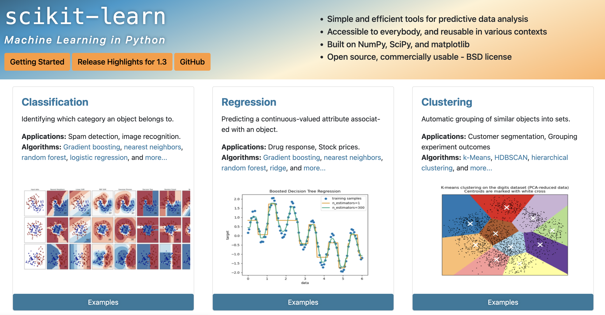
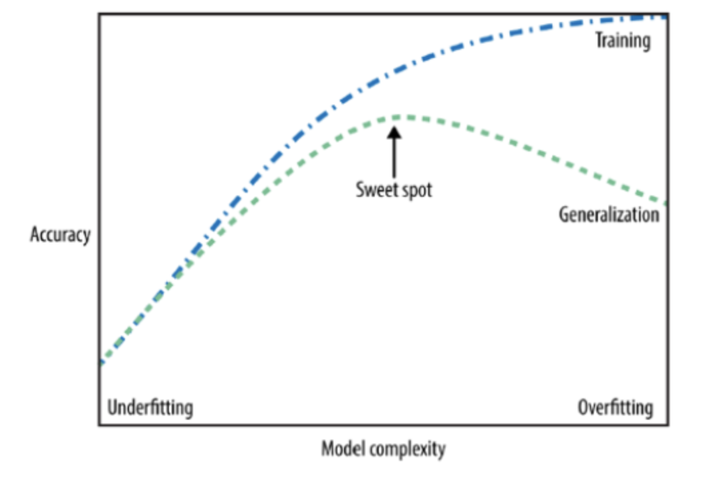

Chapter 9: Machine Learning#
Machine Learning Application in Geospatial Data#
Author: Dr. Suborna Ahmed
In Machine Learning, Python is widely used and many Python libraries are built for analyzing geodata. You have applied many Python modules on Geospatial data already. Now, you will apply some of those modules (i.e., NumPy, Matplotlib) along with a few more new modules that are built for application of Machine Learning techniques for prediction. We will also apply some methods that you have learned in the Linear Regression course (i.e., developing statistical models and checking assumptions).
Learning Objectives:#
What is Machine Learning
General Characteristics
Terminologies
Why Use ML in Remote Sensing/GIS?
scikit-learn
Load and Analyze Iris dataset
Fitting Models
Overfitting Models
Setup the environment
Activate Libraries
Load dataset
Different Approaches to Reduce Overfitting
Training, Validation, and Test data
Types of Algorithms
Supervised algorithms
Unsupervised algorithms
Popular Algorithms:
k-Nearest Neighbors
Popular Algorithms: CART
Random Forest
Analyze a Real Data and Assessing the Model Accuracy
1. What is Machine Learning?#
Machine learning (ML) is the process by which a computer solves a task that it was not explicitly programmed to do. In Machine Learning algorithm statistical methodologies are combined with computer science technologies to train algorithms to learn the pattern in the training data and apply them onto an untrained dataset. For example we can use ML techniques to:
Predict a classification for a new image
Identify an email as spam
Forecast storm movement
Machine learning is a subset of artificial intelligence (AI).
Artificial intelligence is a computer’s ability to “learn” and make decisions.
References: More information can be found here.
1.1. General Characteristics:#
Prioritizes predictive accuracy
Less focus on inference/hypothesis testing
Handles big-data:
Large number of observations?
Large number of independent variables?
1.2.Terminologies:#
Independent variables:
Attribute
Feature
Predictor
Field
Outcome or Result or Predicted Values
Error Estimate: Mean squared error (MSE) (in Statistics)
Loss Function
Dimensionality
2. Why Use ML in Remote Sensing/GIS?#
In spatial analysis, ML is a popular component and the algorithm is applied on geoprocessing tools.
Classification \(\Rightarrow\) create land-cover classification layer
Clustering \(\Rightarrow\) process a large data and identify probable clusters
Prediction \(\Rightarrow\) predictive modelling through weighted regression
Reference: More information can be found here.
Further, many other interesting tasks require (or benefit from) machine learning:
Imputing missing information
Transforming spectral information
Masking clouds
Forecasting crop growth
ML models can scale in a way that humans cannot
3. scikit-learn#
Arguably the most popular language for ML
By the far the most popular module is scikit-learn
So popular that it comes prepackaged with Anaconda!
scikit-learn is built on top of NumPy, SciPy, and matplotlib
Open source with a very active community
Tons of tools and algorithms ready to go
Built-in sample datasets to practice and explore!
sklearnis an alias for scikit-learn.
References:
A brief history, basic functionality and quick learining references can be found on this site.
Read this webpage for learing to build a ML Classifier in Python with Scikit-learn
Detail guidelines of main features of scikit-learn can be found on this site.

4. Setup the Environment#
Prepare your Notebook to apply main features of sci-kit learn.
# load here or from Command Prompt
!pip install -U scikit-learn
Requirement already satisfied: scikit-learn in /Library/Frameworks/Python.framework/Versions/3.9/lib/python3.9/site-packages (1.3.0)
Requirement already satisfied: numpy>=1.17.3 in /Library/Frameworks/Python.framework/Versions/3.9/lib/python3.9/site-packages (from scikit-learn) (1.24.2)
Requirement already satisfied: scipy>=1.5.0 in /Library/Frameworks/Python.framework/Versions/3.9/lib/python3.9/site-packages (from scikit-learn) (1.11.2)
Requirement already satisfied: joblib>=1.1.1 in /Library/Frameworks/Python.framework/Versions/3.9/lib/python3.9/site-packages (from scikit-learn) (1.3.2)
Requirement already satisfied: threadpoolctl>=2.0.0 in /Library/Frameworks/Python.framework/Versions/3.9/lib/python3.9/site-packages (from scikit-learn) (3.2.0)
# Load Libraries
import numpy as np
import matplotlib.pyplot as plt
import sklearn
import rasterio
4.1. The Famous Iris Dataset#
One of the most famous datasets in ML.
Empirical measurements of 150 iris flowers.
Features:
petal length
petal width
sepal length
sepal width
Target:
Can we predict its species?
It’s essential to familiarize ourselves with the data before diving into analysis or modeling. Take some time to explore its structure, contents, and nuances.
Upon initial observation, you’ll notice that the data predominantly resembles numpy arrays.

Reference: http://www.lac.inpe.br/~rafael.santos/Docs/CAP394/WholeStory-Iris.html
# Load iris data
from sklearn.datasets import load_iris # import the dataset
iris_dataset = load_iris()
4.2. Objects in the Iris Data#
Keys – all the different aspects of our dataset that we can call.
Feature_names – the names of the measurements that we will use to try to predict classification.
Data – the actual measurements from feature_names. Does not include the targets!
Target – the classifications we are trying to predict.
View the different attributes (or keys) of our dataset object:
print("attributes of iris_dataset: \n" + str(iris_dataset.keys()))
attributes of iris_dataset:
dict_keys(['data', 'target', 'frame', 'target_names', 'DESCR', 'feature_names', 'filename', 'data_module'])
View the different features (attributes or characteristics):
print("features: \n" + str(iris_dataset.feature_names))
features:
['sepal length (cm)', 'sepal width (cm)', 'petal length (cm)', 'petal width (cm)']
View the names of the target classes in the dataset:
print("targets: \n" + str(iris_dataset.target_names))
targets:
['setosa' 'versicolor' 'virginica']
View the shape (dimensions) of the dataset’s main data: this will give the number of samples (flowers) and the number of features (measurements).
The
.shapeattribute is a tuple indicating the dimensions of a numpy array.
print("dataset dimensions: \n" + str(iris_dataset.data.shape))
dataset dimensions:
(150, 4)
View the shape (dimensions) of the target data.
The target data usually has one dimension, indicating the number of samples.
print("target data dimensions: \n" + str(iris_dataset.target.shape))
target data dimensions:
(150,)
Have a look at the some of the data and the keys:
select the first 10 rows and all columns (4 measurements:) of the data:
print(iris_dataset.data[0:10, :])
[[5.1 3.5 1.4 0.2]
[4.9 3. 1.4 0.2]
[4.7 3.2 1.3 0.2]
[4.6 3.1 1.5 0.2]
[5. 3.6 1.4 0.2]
[5.4 3.9 1.7 0.4]
[4.6 3.4 1.4 0.3]
[5. 3.4 1.5 0.2]
[4.4 2.9 1.4 0.2]
[4.9 3.1 1.5 0.1]]
prints the target values (species labels) for the first 10 flowers in the dataset: in the context of the Iris dataset, this would typically show all
setosasince the dataset is ordered by species.
“0” typically corresponds to the species ‘setosa’.
“1” would correspond to ‘versicolor’.
“2” would correspond to ‘virginica’.
print(iris_dataset.target[0:10])
[0 0 0 0 0 0 0 0 0 0]
4.3. Overfitting and Underfitting Models#
Overfitting
Overfitting is one of the most common pitfalls in machine learning. When a model is overfitted, it means it has learned the training data exceptionally well, including its noise and outliers, to the point where it performs poorly on new, unseen data.
Characteristics of Overfitting:
The model performs exceptionally well on the training data: might pass through almost every single data point, including any noise or anomalies.
The model performs poorly on the test data or new, unseen data.
The model is too complex, with too many parameters (a high-degree polynomial).
Underfitting
Underfitting occurs when a machine learning model is too simplistic to capture the underlying structure or pattern of the data.
Characteristics of Underfitting:
The model performs poorly on both the training data and the test data.
The model is too simple, might not have enough parameters.
Eg: a linear model, which can only produce straight lines, is too simplistic to capture the sinusoidal nature of a sine curve.
# Generate sample data based on a sine curve
np.random.seed(0) # set seed for reproductivity
x = np.sort(2 * np.pi * np.random.rand(80, 1), axis=0) # Generating data points between [0, 2π]
y = np.sin(x).ravel() + np.random.normal(0, 0.1, x.shape[0]) # sine curve with added noise
# Overfitting model (using KNeighborsRegressor with n_neighbors=1)
from sklearn.neighbors import KNeighborsRegressor
model1 = KNeighborsRegressor(n_neighbors=1).fit(x, y)
# Underfitting model (fit a linear regression model)
from sklearn.linear_model import LinearRegression
model2 = LinearRegression().fit(x, y)
# Plot
plt.scatter(x, y, color='black', s=30, marker='o', label="training points")
plt.plot(x, model1.predict(x), color='red', linewidth=2, label="model1: Overfitting")
plt.plot(x, model2.predict(x), color='green', linewidth=2, label="model2: Underfitting")
plt.legend(loc='upper right')
plt.xlabel("x")
plt.ylabel("y")
plt.show()
Questions to Consider:
Which model would be more successful at predicting new, “unseen” data?
Red (model 1) or green (model 2)?
The plot aims to demonstrate two different models and how they relate to the training data, illustrating the concepts of overfitting, underfitting.
Black points are measured data: they seem to follow a pattern but have some random noise associated.
Let’s pretend I created two different ML models, red and green, and their predictions are shown here. If we added more data to the right, which of these two models would be more successful at getting the trend correct?
Model1: Overfitting:
This model is represented by the red line. It’s an instance of extreme overfitting. Since it tries to pass through every training point, it also captures the noise, which is not ideal.
In a real-world scenario, this model would likely perform poorly on new, unseen data because it’s too closely tailored to the training data.
For unseen data points that fall very close to the original training data, the predictions might be reasonable. However, for data points that fall between two training points or outside the range of the training data, the predictions can be erratic. Since the model is influenced heavily by noise, it might predict sharp jumps or falls where the actual function might be smooth. Additionally, if the new data points don’t contain the same noise as the training data, the overfit model’s predictions would be inaccurate.Model2: Underfitting:
Represented by the green line, this is a simple linear regression model. Given that the underlying data is based on a sine curve, a straight line is too simple to capture the data’s inherent patterns. Hence, the model underperforms both on training and, likely, on unseen data, fails to capture the underlying structure of the data.
Given that this model is too simplistic, it would consistently predict values along a straight line regardless of the inputs. It won’t be able to capture the oscillating behavior of the sine curve.
4.3.1.Different Approaches to Reduce Overfitting#
Reduce the number of training epochs (aka ‘runs’) Reference to learn epochs.
Limit the number of parameters
Penalize large values for fitting parameters (‘regularization’)
Tends to smooth results
Ensemble models
Train many different models, then take the average of their predictions
Extremely common!
Separate training, test, and validation data
4.3.2. Different Approaches to Reduce Underfitting#
Increase Model Complexity:
Simple models are more likely to underfit. Adding complexity, like additional layers in neural networks or higher-degree features in polynomial regression, can help.
Add More Features:
Sometimes, the model might not have enough information to make accurate predictions. Consider engineering new features or using more available features.
Reduce Regularization
Ensemble Methods
Cross-validation

Rare to see models that are NOT ensembled!
It’s crucial to continuously monitor and diagnose model performance.
Identifying underfitting early on can save valuable resources and guide you to adjust the model or training process accordingly.
We don’t want to get too far into this though, so we’ll just focus on the most inescapable: our dataset.
Very important to consider overtraining whenever you do any ML task.
Reference on overfirrintg and underfitting
The figure above is a typical visualization in machine learning called the “Bias-Variance Tradeoff” or “Model Complexity vs. Generalization Error” curve.
The plot typically shows the relationship between the complexity of a model (e.g., depth of a decision tree, degree of a polynomial in regression) and its performance on both training data and validation/test data.
Training Error is the error that you get when you test your model on the data that you trained on. It represents how well the model has learned the training data.
Generalization Error is the error that you get when you test your model on new, unseen data. It represents how well the model can generalize its knowledge from the training data to new data.
In this figure:
Underfitting: When the model is too simple, it may not capture the underlying patterns in the data. This leads to poor performance on both training and test datasets. This is the left side of the plot.
Overfitting: If the model becomes too complex, it might start to fit the noise in the training data, thinking it’s a pattern. While it will have a very high accuracy on the training data, its performance on unseen (test) data will decrease. This is the right side of the plot.
Sweet Spot: As the model becomes more complex, its performance on the training data improves. More importantly, its performance on the test data also improves, but only up to a certain point. This point, where the test performance is optimal, is often called the “sweet spot” because it represents a good balance between bias (error due to overly simplistic models) and variance (error due to overly complex models that are too sensitive to the training data).
4.4. Training, Validation, and Test data#
Training data: the data that your model uses to “learn”.
Validation data: “unseen” data points that are used to assess how well the model learned
We consider models that are more successful at predicting the test data to be more predictive, i.e. “better”
Used repeatedly during training to assess the model fit
Test data: additional “unseen” data that is used to assess the final model
These are held out until the very, very end
Reference on training, test and validation data.
Sometimes we just have two sets of data. In this case, there is no difference between the test and the validation. In that case, we usually just call it test data. Mostly only separate validation and test data when we are bootstrapping and ensembling models.
Test and validation data only need to be separated during more advanced techniques!
We will not distinguish between test and validation data here.
4.4.1. Separate Iris Data into Train and Test Data#
Set aside some of the data for training and some for testing.
This code demonstrates how to split the iris dataset into training and testing sets using the train_test_split function from sklearn module. The training set will be used to train a machine learning model, while the testing set will be used to evaluate the model’s performance on data it hasn’t seen during training.
By default, this function splits the data in a 75% (training) to 25% (testing) ratio.
from sklearn import model_selection
# x represents the features that we have (petal and sepal characteristics)
# y represents the targets that we are trying to predict
# train_test_split separates the data into matching test and train sets
x_train, x_test, y_train, y_test = model_selection.train_test_split(iris_dataset.data, iris_dataset.target)
print("x_train dimensions:" + str(x_train.shape))
print("x_test dimensions: " + str(x_test.shape))
print("y_train dimensions: " + str(y_train.shape))
print("y_test dimensions: " + str(y_test.shape))
x_train dimensions:(112, 4)
x_test dimensions: (38, 4)
y_train dimensions: (112,)
y_test dimensions: (38,)
iris_dataset.data: contains the features (e.g., petal and sepal lengths and widths) of the iris dataset.
iris_dataset.data
array([[5.1, 3.5, 1.4, 0.2],
[4.9, 3. , 1.4, 0.2],
[4.7, 3.2, 1.3, 0.2],
[4.6, 3.1, 1.5, 0.2],
[5. , 3.6, 1.4, 0.2],
[5.4, 3.9, 1.7, 0.4],
[4.6, 3.4, 1.4, 0.3],
[5. , 3.4, 1.5, 0.2],
[4.4, 2.9, 1.4, 0.2],
[4.9, 3.1, 1.5, 0.1],
[5.4, 3.7, 1.5, 0.2],
[4.8, 3.4, 1.6, 0.2],
[4.8, 3. , 1.4, 0.1],
[4.3, 3. , 1.1, 0.1],
[5.8, 4. , 1.2, 0.2],
[5.7, 4.4, 1.5, 0.4],
[5.4, 3.9, 1.3, 0.4],
[5.1, 3.5, 1.4, 0.3],
[5.7, 3.8, 1.7, 0.3],
[5.1, 3.8, 1.5, 0.3],
[5.4, 3.4, 1.7, 0.2],
[5.1, 3.7, 1.5, 0.4],
[4.6, 3.6, 1. , 0.2],
[5.1, 3.3, 1.7, 0.5],
[4.8, 3.4, 1.9, 0.2],
[5. , 3. , 1.6, 0.2],
[5. , 3.4, 1.6, 0.4],
[5.2, 3.5, 1.5, 0.2],
[5.2, 3.4, 1.4, 0.2],
[4.7, 3.2, 1.6, 0.2],
[4.8, 3.1, 1.6, 0.2],
[5.4, 3.4, 1.5, 0.4],
[5.2, 4.1, 1.5, 0.1],
[5.5, 4.2, 1.4, 0.2],
[4.9, 3.1, 1.5, 0.2],
[5. , 3.2, 1.2, 0.2],
[5.5, 3.5, 1.3, 0.2],
[4.9, 3.6, 1.4, 0.1],
[4.4, 3. , 1.3, 0.2],
[5.1, 3.4, 1.5, 0.2],
[5. , 3.5, 1.3, 0.3],
[4.5, 2.3, 1.3, 0.3],
[4.4, 3.2, 1.3, 0.2],
[5. , 3.5, 1.6, 0.6],
[5.1, 3.8, 1.9, 0.4],
[4.8, 3. , 1.4, 0.3],
[5.1, 3.8, 1.6, 0.2],
[4.6, 3.2, 1.4, 0.2],
[5.3, 3.7, 1.5, 0.2],
[5. , 3.3, 1.4, 0.2],
[7. , 3.2, 4.7, 1.4],
[6.4, 3.2, 4.5, 1.5],
[6.9, 3.1, 4.9, 1.5],
[5.5, 2.3, 4. , 1.3],
[6.5, 2.8, 4.6, 1.5],
[5.7, 2.8, 4.5, 1.3],
[6.3, 3.3, 4.7, 1.6],
[4.9, 2.4, 3.3, 1. ],
[6.6, 2.9, 4.6, 1.3],
[5.2, 2.7, 3.9, 1.4],
[5. , 2. , 3.5, 1. ],
[5.9, 3. , 4.2, 1.5],
[6. , 2.2, 4. , 1. ],
[6.1, 2.9, 4.7, 1.4],
[5.6, 2.9, 3.6, 1.3],
[6.7, 3.1, 4.4, 1.4],
[5.6, 3. , 4.5, 1.5],
[5.8, 2.7, 4.1, 1. ],
[6.2, 2.2, 4.5, 1.5],
[5.6, 2.5, 3.9, 1.1],
[5.9, 3.2, 4.8, 1.8],
[6.1, 2.8, 4. , 1.3],
[6.3, 2.5, 4.9, 1.5],
[6.1, 2.8, 4.7, 1.2],
[6.4, 2.9, 4.3, 1.3],
[6.6, 3. , 4.4, 1.4],
[6.8, 2.8, 4.8, 1.4],
[6.7, 3. , 5. , 1.7],
[6. , 2.9, 4.5, 1.5],
[5.7, 2.6, 3.5, 1. ],
[5.5, 2.4, 3.8, 1.1],
[5.5, 2.4, 3.7, 1. ],
[5.8, 2.7, 3.9, 1.2],
[6. , 2.7, 5.1, 1.6],
[5.4, 3. , 4.5, 1.5],
[6. , 3.4, 4.5, 1.6],
[6.7, 3.1, 4.7, 1.5],
[6.3, 2.3, 4.4, 1.3],
[5.6, 3. , 4.1, 1.3],
[5.5, 2.5, 4. , 1.3],
[5.5, 2.6, 4.4, 1.2],
[6.1, 3. , 4.6, 1.4],
[5.8, 2.6, 4. , 1.2],
[5. , 2.3, 3.3, 1. ],
[5.6, 2.7, 4.2, 1.3],
[5.7, 3. , 4.2, 1.2],
[5.7, 2.9, 4.2, 1.3],
[6.2, 2.9, 4.3, 1.3],
[5.1, 2.5, 3. , 1.1],
[5.7, 2.8, 4.1, 1.3],
[6.3, 3.3, 6. , 2.5],
[5.8, 2.7, 5.1, 1.9],
[7.1, 3. , 5.9, 2.1],
[6.3, 2.9, 5.6, 1.8],
[6.5, 3. , 5.8, 2.2],
[7.6, 3. , 6.6, 2.1],
[4.9, 2.5, 4.5, 1.7],
[7.3, 2.9, 6.3, 1.8],
[6.7, 2.5, 5.8, 1.8],
[7.2, 3.6, 6.1, 2.5],
[6.5, 3.2, 5.1, 2. ],
[6.4, 2.7, 5.3, 1.9],
[6.8, 3. , 5.5, 2.1],
[5.7, 2.5, 5. , 2. ],
[5.8, 2.8, 5.1, 2.4],
[6.4, 3.2, 5.3, 2.3],
[6.5, 3. , 5.5, 1.8],
[7.7, 3.8, 6.7, 2.2],
[7.7, 2.6, 6.9, 2.3],
[6. , 2.2, 5. , 1.5],
[6.9, 3.2, 5.7, 2.3],
[5.6, 2.8, 4.9, 2. ],
[7.7, 2.8, 6.7, 2. ],
[6.3, 2.7, 4.9, 1.8],
[6.7, 3.3, 5.7, 2.1],
[7.2, 3.2, 6. , 1.8],
[6.2, 2.8, 4.8, 1.8],
[6.1, 3. , 4.9, 1.8],
[6.4, 2.8, 5.6, 2.1],
[7.2, 3. , 5.8, 1.6],
[7.4, 2.8, 6.1, 1.9],
[7.9, 3.8, 6.4, 2. ],
[6.4, 2.8, 5.6, 2.2],
[6.3, 2.8, 5.1, 1.5],
[6.1, 2.6, 5.6, 1.4],
[7.7, 3. , 6.1, 2.3],
[6.3, 3.4, 5.6, 2.4],
[6.4, 3.1, 5.5, 1.8],
[6. , 3. , 4.8, 1.8],
[6.9, 3.1, 5.4, 2.1],
[6.7, 3.1, 5.6, 2.4],
[6.9, 3.1, 5.1, 2.3],
[5.8, 2.7, 5.1, 1.9],
[6.8, 3.2, 5.9, 2.3],
[6.7, 3.3, 5.7, 2.5],
[6.7, 3. , 5.2, 2.3],
[6.3, 2.5, 5. , 1.9],
[6.5, 3. , 5.2, 2. ],
[6.2, 3.4, 5.4, 2.3],
[5.9, 3. , 5.1, 1.8]])
iris_dataset.target: contains the target labels (e.g., species of iris like setosa, versicolor, virginica).
The values 0, 1, and 2 in iris.target correspond to the three different species of the Iris flower.
iris_dataset.target
array([0, 0, 0, 0, 0, 0, 0, 0, 0, 0, 0, 0, 0, 0, 0, 0, 0, 0, 0, 0, 0, 0,
0, 0, 0, 0, 0, 0, 0, 0, 0, 0, 0, 0, 0, 0, 0, 0, 0, 0, 0, 0, 0, 0,
0, 0, 0, 0, 0, 0, 1, 1, 1, 1, 1, 1, 1, 1, 1, 1, 1, 1, 1, 1, 1, 1,
1, 1, 1, 1, 1, 1, 1, 1, 1, 1, 1, 1, 1, 1, 1, 1, 1, 1, 1, 1, 1, 1,
1, 1, 1, 1, 1, 1, 1, 1, 1, 1, 1, 1, 2, 2, 2, 2, 2, 2, 2, 2, 2, 2,
2, 2, 2, 2, 2, 2, 2, 2, 2, 2, 2, 2, 2, 2, 2, 2, 2, 2, 2, 2, 2, 2,
2, 2, 2, 2, 2, 2, 2, 2, 2, 2, 2, 2, 2, 2, 2, 2, 2, 2])
Continue exploring your data:
Scatter plots are a quick way to start exploring
Here, the colors correspond to the three species
In the following code the argument ‘c’ stands for ‘color’ in plt.scatter. Basically, use the y values (i.e. the species) to determine the colors. Three values present in y_train (0,1,2), so we end up with three colors.
# visualize the training data!
plt.figure(1)
scatter = plt.scatter(x_train[:,0], x_train[:,1], c=y_train)
plt.xlabel("sepal length")
plt.ylabel("sepal width")
plt.title("Iris species by Sepal measurements")
labels = ["0=setosa", "1=versicolor", "2=virginica"]
plt.legend(handles=scatter.legend_elements()[0], title="Species", labels=labels, loc="upper right")
plt.show()
Below, the argument ‘c’ stands for ‘color’ in plt.scatter. Basically, use the y values (i.e. the species) to determine the colors. Three values present in y_train (0,1,2), so we end up with three colors.
# visualize the training data another way!
plt.figure(2)
scatter = plt.scatter(x_train[:,2], x_train[:,3], c=y_train)
plt.xlabel("petal length")
plt.ylabel("petal width")
plt.title("Iris species by Petal measurements")
labels = ["0=setosa", "1=versicolor", "2=virginica"]
plt.legend(handles=scatter.legend_elements()[0], title="Species", labels=labels, loc="lower right")
plt.show()
5. Types of Algorithms#
ML approaches broadly separated into supervised learning and unsupervised learning.
Supervised algorithms learn from known examples
Require input data with output labels
Make “decisions” about new information and assign labels learned during training
Unsupervised algorithms learn directly from unlabelled data
Only require input data
Look for patterns and structure in the data
5.1. Supervised Algorithms#
In supervised algorithm Major classes are classification and regression algorithms.
Classification of Supervised learning:
1.Classification
Prediction of categorical outcomes
Logistic regression
2.Regression
Prediction of continuous outcomes
Linear regression
Advantages:
Outputs are easier to understand
Match the input data
Generally higher success rates
Disadvantages:
Require lots of labelled training data – hard to come by!
Outputs are only as good as your inputs
Garbage in, garbage out
Examples:
Classify land cover based on labelled training data
Identify handwritten characters
Predict age of a stand based lidar point cloud
Things to remember:
Classification provides a class label (categorical variables).
Regression provides a continuous number (continuous variables).
5.2. Unsupervised Algorithms#
In unsupervised learning, the algorithm is provided with input data without explicit instructions on what to do with it.
1.Clustering: to divide a dataset into groups (or clusters) based on some similarity measures.
K-Means clustering
Hierarchical clustering
2.Dimensionality Reduction: reducing the number of random variables under consideration and obtaining a set of principal variables.
Principal Component Analysis (PCA)
Singular Value Decomposition (SVD)
Advantages:
Does not require labeled data
Can find things in data that a human would not know to look for
Disadvantages:
Generally less successful than supervised algorithms
Outputs can be difficult to understand
Examples:
Segment an image based on land cover (without any independent training data)
Determine the characteristic patterns in a time series
Identify the most correlated pixels in a pair of images
5.3. Popular Supervised Algorithms – Linear Regression#
Most popular is by far the ordinary least squares (OLS)
Used extensively for both regression and (binary) classification tasks
In regression, used to predict a number
In classification, used to predict a class by finding the “decision boundary” between two classes
Finds slope and intercept that best fit the training data
“Best fit” for OLS means minimizing mean squared error between predictions (your line) and targets (actual values)
Assumptions:
Errors are normally distributed
Errors are homoscedastic
Mean of errors is 0
No autocorrelation
Advantages:
Easy to understand and implement
Very efficient
Disadvantages:
Strict assumptions
Coarse tool – cannot capture much nuance in the data
5.4. Popular Algorithms: k-Nearest Neighbors#
About as simple as it gets!
Each new test point is assigned the same class as the point nearest it
k = number of neighbors to use E.g. if k=3, use the mode of the 3 nearest neighbors to determine class of the point
Advantages:
Few parameters
Disadvantages:
Can be slow
Works poorly with high-dimensional data
The following example plot the KNN algorithm with two subplots.
First need to generate some data points, we create some points belonging two classes and also the test points which we want to use the KNN algorithm to predict the classes for them.
# Generate training data points
class_0 = np.array([[3, 6], [4.5, 10], [3, 9], [4, 6], [5, 7], [3,7], [4, 8.6], [5, 9]])
class_1 = np.array([[3, 7.5], [3, 4], [5, 3], [6, 3], [8,2], [10, 3]])
test_points = np.array([[3.5, 7.6], [5,6], [9,5]])
plt.figure(figsize=(8,6))
# plot training classes
plt.scatter(class_0[:, 0], class_0[:, 1], marker='o', label='Training Class 0', s=100, color='blue')
plt.scatter(class_1[:, 0], class_1[:, 1], marker='o', label='Training Class 1', s=100, color='red')
# Plot test point
plt.scatter(test_points[:, 0], test_points[:, 1], marker='*', label='test points', s=150, color='green')
plt.legend(loc='upper right')
plt.grid(True)
plt.show()
After creating two distinct classes: class_0 and class_1. To train the KNN classifier, we need to concatenate all the training samples together and provide the corresponding labels, allowing it to then identify the nearest neighbors for any test points.
# Concatenate class_0 and class_1 data to create a single training dataset
train_data = np.vstack([class_0, class_1])
train_labels = np.array([0] * len(class_0) + [1] * len(class_1))
# import Pandas to print the training data points and its corresponding Class (label) in a DataFrame
import pandas as pd
# Convert the train_data and train_labels to a DataFrame
df = pd.DataFrame(train_data, columns=['X', 'Y'])
df['Class'] = train_labels
print(df)
X Y Class
0 3.0 6.0 0
1 4.5 10.0 0
2 3.0 9.0 0
3 4.0 6.0 0
4 5.0 7.0 0
5 3.0 7.0 0
6 4.0 8.6 0
7 5.0 9.0 0
8 3.0 7.5 1
9 3.0 4.0 1
10 5.0 3.0 1
11 6.0 3.0 1
12 8.0 2.0 1
13 10.0 3.0 1
# Create a subplot with 1 row and 2 columns (side-by-side plots)
fig, axes = plt.subplots(1, 2, figsize=(16, 6))
# Plot data and nearest neighbors for k=1 and k=3
for ax, k in zip(axes, [1, 3]):
# Plot training data
ax.scatter(class_0[:, 0], class_0[:, 1], marker='o', label='Training Class 0', s=100, color='blue')
ax.scatter(class_1[:, 0], class_1[:, 1], marker='o', label='Training Class 1', s=100, color='red')
# Using KNN to get nearest neighbors
knn = KNeighborsClassifier(n_neighbors=k)
knn.fit(train_data, train_labels)
nearest_neighbors = knn.kneighbors(test_points, return_distance=False)
# Plot test points and draw arrows to their nearest neighbors
for i, test_point in enumerate(test_points):
added_label = False # used to track whether a label for a test point has been added to the plot yet (for k=3)
for neighbor_index in nearest_neighbors[i]:
nearest_neighbor = train_data[neighbor_index]
if not added_label:
ax.scatter(test_point[0], test_point[1], marker='*', s=150, color='green', label=f'Test Point {i+1}')
added_label = True
else:
ax.scatter(test_point[0], test_point[1], marker='*', s=150, color='green')
ax.annotate(f'{i+1}', xy=nearest_neighbor, xytext=test_point, arrowprops=dict(facecolor='black', arrowstyle='->', lw=2))
ax.set_title(f'K-Nearest Neighbors (k={k})')
ax.legend(loc='upper right')
ax.grid(True)
plt.tight_layout()
plt.show()
---------------------------------------------------------------------------
NameError Traceback (most recent call last)
/var/folders/qt/qy37fy6s3c1553y2k74063pr0000gn/T/ipykernel_49145/939069137.py in <module>
9
10 # Using KNN to get nearest neighbors
---> 11 knn = KNeighborsClassifier(n_neighbors=k)
12 knn.fit(train_data, train_labels)
13 nearest_neighbors = knn.kneighbors(test_points, return_distance=False)
NameError: name 'KNeighborsClassifier' is not defined
From this example:
When we use k = 1, test point 1 is predicted to be class 1; test point 2 is predicted to be class 0; and test point 3 is predicted to be class 1.
When we use k = 2, test point 1 is predicted to be class 0; test point 2 is predicted to be class 0; and test point 3 is predicted to be class 1.
5.5. Popular Algorithms: CART#
Supervised
Classification and Regression Trees
Aka “decision trees”
Effectively a bunch of if/else statements
https://jwoodscience.springeropen.com/articles/10.1186/s10086-020-01904-0
References:
My articel published this year: Application of Decision Tree Based Techniques to Veneer Processing.
5.6. Random Forest#
Possibly THE most popular ML algorithm.
Incorporates many, many CARTs
Make many different CARTs based on the training data, then combine them
Each new piece of data is tested on all the trees
Output classification is assigned by voting
Advantages:
Overfits less than a single CART
Disadvantages:
Takes longer to train and evaluate
Performs poorly on high dimensional data
5.7 Training a ML Model#
Let’s use a CART to classify the Iris data. Yes, it really is this easy!
Th3 code initializes a Decision Tree classifier, trains it on provided training data (x_train and y_train), and then uses the trained classifier to predict labels for the test data (x_test).
# training your first classifier! Let's use a CART.
from sklearn import tree
classifier = tree.DecisionTreeClassifier() # create an instance of the classifier
classifier = classifier.fit(x_train, y_train) # train it! Only show it the training data
predictions = classifier.predict(x_test) # generate predictions!
print("Predictions has some shape as y_test: " + str(predictions.shape))
Predictions has some shape as y_test: (38,)
predictions
array([2, 2, 1, 1, 2, 1, 0, 2, 1, 2, 0, 2, 1, 0, 0, 2, 1, 2, 0, 1, 2, 2,
2, 2, 2, 0, 2, 1, 0, 0, 2, 2, 2, 1, 0, 1, 2, 1])
5.8. Assessing the Model Accuracy#
No unified way to assess unsupervised model accuracy
Key metrics for supervised (classification) algorithms:
User’s accuracy
Producer’s accuracy
Kappa coefficient
Precision/recall
F1-score
5.9. Confusion Matrix#
A confusion matrix, also known as an error matrix, is a specific table layout that visualizes the performance of an algorithm. Its primary purpose is to showcase the actual versus the predicted classifications provided by the classifier.
The matrix itself is relatively simple in structure. It consists of two dimensions:
Actual Class: The true classifications of the test data.
Predicted Class: The classifications predicted by the model.
Advantages of using a Confusion Matrix:
It provides a detailed breakdown of prediction errors in each category.
It’s a great tool for understanding the performance beyond just accuracy.
from sklearn.metrics import confusion_matrix
import seaborn as sns
# Generate the confusion matrix
cm = confusion_matrix(y_test, predictions)
cm
array([[ 9, 0, 0],
[ 0, 11, 2],
[ 0, 0, 16]])
# Visualize the confusion matrix using Seaborn's heatmap
plt.figure(figsize=(10, 7))
sns.heatmap(cm, annot=True, fmt="d", cmap="Blues", annot_kws={"size": 16})
plt.xlabel('Predicted Class', fontsize = 20)
plt.ylabel('Actual Class', fontsize = 20)
plt.title('Confusion Matrix', fontsize = 20)
plt.show()
Anything on the diagonal is “good”
Means that the prediction is correct
Anything off the diagonal is “bad”
Means the prediction was incorrect!
The deeper the color, the higher the value, which means the model made more predictions of that particular type.
Each cell in the heatmap is annotated with the actual value from the confusion matrix. This provides a clear count of how many times a particular classification outcome occurred.
5.10. Kappa Coefficient#
\(p_o\) = accuracy (fraction correctly predicted)
\(p_e\) = probability of chance agreement
\(\kappa\) = 1:
Perfect agreement
\(\kappa\) = 0:
Agreement is the same that we would expect from pure chance
\(\kappa\) < 0:
Agreement is worse than we would expect from pure chance
6. Problem-Solving Framework#
Get to know your data
How is it organized? What shape is it?
Are there missing values?
How big is it?
State your objective
What should my output look like? How will I know if I’m successful?
Decide on an algorithm
Supervised or unsupervised?
How simple or complex?
Build and run a model
Assess your results
Are they what I expected?
How could I improve my results?
Let’s make a land cover classifier
Use Landsat data as our predictor data
Using the Iris dataset as an analogy:
What are our “species”?
What are our “measurements”?
Whether or not there has been a fire as target data
Use rasterio to load our images into numpy arrays
After loading, do some basic exploration
# assesssing the quality of our model
# accuracy: fraction of predictions that are correct
print("accuracy: " + str(np.mean(predictions == y_test))) # use the fact that this expression is 1 where true and 0 where false
# alternative way to do the same thing: classifier.score(x_test, y_test)
accuracy: 0.9473684210526315
# confusion matrix and kappa coefficient
print(sklearn.metrics.confusion_matrix(y_test, predictions))
print(sklearn.metrics.cohen_kappa_score(y_test, predictions))
[[ 9 0 0]
[ 0 11 2]
[ 0 0 16]]
0.9184549356223176
##############################################################
# let's apply what we've learned to some real geospatial data!
##############################################################
landsat_path = "LC08_L1TP_20190702_image1.tif"
fires_path = "fires_clip_bi.tif"
validation_path = "LC08_L1TP_20190819_image2.tif"
#load in the first landsat image. This will be our training and test data
with rasterio.open(landsat_path, 'r') as src:
landsat_arr = src.read()
landsat_meta = src.meta
with rasterio.open(fires_path, 'r') as src:
fires_arr = src.read()
fires_meta = src.meta
print(landsat_arr.shape) # get a little familiar with your data. How many bands do we have?
print(fires_arr.shape)
(7, 1974, 2457)
(1, 1974, 2457)
# do a quick visualization of NIR band
plt.imshow(landsat_arr[4,:,:], cmap="Greys") # select Band 5 (NIR)
plt.colorbar()
plt.title("NIR band", fontsize=16)
plt.show()

plt.imshow(fires_arr[0,:,:], cmap="Greys")
plt.colorbar()
plt.title("NIR band", fontsize=16)
plt.show()
Working Process#
We are going to use simple methods which do not consider the spatial relationship of pixels
That means we can “flatten” our image
Use np.reshape() to turn it from (bands, rows, cols) to (bands, rows*cols)
Need to rearrange it a little bit for sklearn
Remember that sklearn expects (samples, features), which means (pixels, bands) for geospatial data
Use np.swapaxes() to reverse the order
# sklearn expects data to be in numpy arrays with the shape (samples, features)
# in our case, that means (pixels, bands)
bands, rows, cols = landsat_arr.shape # store these as variables for later
landsat_arr = np.reshape(landsat_arr, (bands, rows*cols))
print(landsat_arr.shape)
landsat_arr = np.swapaxes(landsat_arr, 0, 1) # this is how sklearn will expect it
print(landsat_arr.shape) # see how the shape is different now? It has the format (pixels, bands)
(7, 4850118)
(4850118, 7)
# reformat our target data the same way (i.e. labels of where there were and weren't fires)
fires_arr = np.reshape(fires_arr, (rows*cols))
print(fires_arr.shape)
(4850118,)
We still want to divide our image into train and test data
We can do this exactly the same way as before
# let's get ready to do some ML!
# separate out train/validation data
# x=actual, independednt, y=denendent, landsat
x_train, x_test, y_train, y_test = model_selection.train_test_split(landsat_arr, fires_arr)
print("x_train dimensions:" + str(x_train.shape))
print("x_test dimensions: " + str(x_test.shape))
print("y_train dimensions: " + str(y_train.shape))
print("y_test dimensions: " + str(y_test.shape))
x_train dimensions:(3637588, 7)
x_test dimensions: (1212530, 7)
y_train dimensions: (3637588,)
y_test dimensions: (1212530,)
Train a CART and Make Predictions#
classifier = tree.DecisionTreeClassifier() # create an instance of the classifier
classifier = classifier.fit(x_train, y_train) # train it! Only show it the training data
predictions = classifier.predict(x_test)
print("accuracy on our test data: " + str(classifier.score(x_test, y_test)))
accuracy on our test data: 0.8675686374770109
# check how our predictions look compared to the real thing
# make predictions over the whole image!
# NB - this is not great practice since this includes data the classifier has already seen (x_train is a subset of landsat_arr)
fire_labels_from_ml = classifier.predict(landsat_arr)
Visualize the Results#
# make a plot comparing the known labels to the predicted labels
fig, axs = plt.subplots(1, 2)
fig.suptitle("Fire labels on our training image", fontsize=16)
axs[0].imshow(fires_arr.reshape(rows, cols))
axs[0].title.set_text("Actual fire labels")
axs[1].imshow(fire_labels_from_ml.reshape(rows, cols))
axs[1].title.set_text("Predicted fire labels")
plt.show()
Concern and Application Plan#
What happens if we apply this classifier to a brand new image?
Our classifier has only ever seen one area on a single day
Now let’s try to apply it to the same area, but weeks later
# How does this model perform on data it has never seen before?
# Let's show it an image over the exact same area that was acquired on a different date (6 weeks later).
with rasterio.open(validation_path, 'r') as src:
validation_arr = src.read()
validation_meta = src.meta
print(validation_arr.shape)
(7, 1974, 2457)
# rearrange the array like we've done with the others
validation_arr = np.reshape(validation_arr, (bands, rows * cols))
validation_arr = np.swapaxes(validation_arr, 0, 1)
# now we just give this new data to our already-trained model to see what it thinks!
prediction_on_validation = classifier.predict(validation_arr)
print("accuracy: " + str(classifier.score(validation_arr, fires_arr)))
print("kappa: " + str(sklearn.metrics.cohen_kappa_score(fires_arr, prediction_on_validation)))
accuracy: 0.7591739005112865
kappa: 0.3175419732636314
fig, axs = plt.subplots(1, 2)
fig.suptitle("Fire labels on a previously unseen image!", fontsize=16)
axs[0].imshow(fires_arr.reshape(rows, cols))
axs[0].title.set_text("Actual fire labels")
axs[1].imshow(prediction_on_validation.reshape(rows, cols))
axs[1].title.set_text(" Predicted fire labels on previously-unseen data!")
plt.show()
Debriefing the Results#
How did our classifier perform?
What measures did you use to assess?
Did it do as well as you expected?
How could you improve its performance?
Further Resources#
Courses on ML and data analysis at UBC:
EOSC 510 – Data Analysis for Earth and Ocean Sciences
CPSC 340 – Machine Learning and Data Mining
Books (free through UBC library):
“Machine Learning: a Probabilistic Perspective” by Kevin Patrick Murphy
“Hands-On Machine Learning with Scikit-Learn, Keras, and Tensorflow” by Auerlien Geron
“Introduction to Machine Learning with Python” by Andreas Muller and Sarah Guido
“Artificial Intelligence: Foundations of Computational Agents” by David Poole and Alan Mackworth
Many, many free online courses
Some of the materials here are shared by Nich Leach.
Activity
Classification Algorithm: Try using a different classification algorithm on the fire data:
K-Nearest Neighbors (KNN): you can choose any number of k but start with 3 and can add more after testing it.
Random Forest
Compare and assess the model accuracies from these three algorithms:
K-Nearest Neighbors
Random Forest
CART: see the lecture notebook Create a table and select the best alogorithm based on the model evaluation result.
Evaluation Method |
KNN |
Random Forest |
CART |
|---|---|---|---|
Accuracy |
? |
? |
? |
Kappa Coefficient |
? |
? |
? |
Steps for Each Algorithm
Follow the same steps that were used in class:
Load the first Landsat 8 image and the fires information into numpy arrays.
Restructure the arrays so that the Landsat 8 image has the format (pixels, bands) and the fires image has the format (pixels, ).
Split the arrays into training and test data.
Train your classifier and make predictions.
Assess the model’s accuracy on the validation data.
Make predictions on the test data (i.e. a different Landsat image altogether).
Assess the model’s accuracy and kappa score on the test data.
Tips
K-Nearest Neighbors (KNN)
For the KNN algorithm you need to import libraries:
from sklearn import model_selection
from sklearn.neighbors import KNeighborsClassifier
Specify the classifier for the KNN:
classifier = KNeighborsClassifier(n_neighbors = 3)
Further Reading: https://towardsdatascience.com/machine-learning-basics-with-the-k-nearest-neighbors-algorithm-6a6e71d01761
Random Forest
For the Random Forest algorithm you need to import libraries:
from sklearn.ensemble import RandomForestClassifier
Specify the classifier for the Random Forest:
classifier = RandomForestClassifier()
# Import all libraries here
!pip install -U scikit-learn
# Load Libraries
import numpy as np
import matplotlib.pyplot as plt
import sklearn
import rasterio
Requirement already satisfied: scikit-learn in /Users/luoyuwen/anaconda3/lib/python3.11/site-packages (1.3.0)
Requirement already satisfied: numpy>=1.17.3 in /Users/luoyuwen/anaconda3/lib/python3.11/site-packages (from scikit-learn) (1.24.3)
Requirement already satisfied: scipy>=1.5.0 in /Users/luoyuwen/anaconda3/lib/python3.11/site-packages (from scikit-learn) (1.10.1)
Requirement already satisfied: joblib>=1.1.1 in /Users/luoyuwen/anaconda3/lib/python3.11/site-packages (from scikit-learn) (1.2.0)
Requirement already satisfied: threadpoolctl>=2.0.0 in /Users/luoyuwen/anaconda3/lib/python3.11/site-packages (from scikit-learn) (2.2.0)
# Import the dataset here
landsat_path = "LC08_L1TP_20190702_image1.tif"
fires_path = "fires_clip_bi.tif"
validation_path = "LC08_L1TP_20190819_image2.tif"
Solution#
K-Nearest Neighbors (KNN) Application#
# load in the first landsat image. This will be our training and test data
with rasterio.open(landsat_path, 'r') as src:
landsat_arr = src.read()
landsat_meta = src.meta
with rasterio.open(fires_path, 'r') as src:
fires_arr = src.read()
fires_meta = src.meta
print(landsat_arr.shape) # get a little familiar with your data. How many bands to we have?
print(fires_arr.shape)
# do a quick visualization of NIR band
plt.imshow(landsat_arr[4,:,:], cmap="Blues") # select Band 5 (NIR)
plt.colorbar()
plt.title("NIR band", fontsize=16)
plt.show()
(7, 1974, 2457)
(1, 1974, 2457)
# sklearn expects data to be in numpy arrays with the shape (samples, features)
# in our case, that means (pixels, bands)
bands, rows, cols = landsat_arr.shape # store these as variables for later
print(landsat_arr.shape)
landsat_arr = np.reshape(landsat_arr, (bands, rows*cols))
print(landsat_arr.shape)
landsat_arr = np.swapaxes(landsat_arr, 0, 1) # this is how sklearn will expect it
print(landsat_arr.shape) # see how the shape is different now? It has the format (pixels, bands)
# reformat our target data the same way (i.e. labels of where there were and weren't fires)
fires_arr = np.reshape(fires_arr, (rows*cols))
print(fires_arr.shape)
(7, 1974, 2457)
(7, 4850118)
(4850118, 7)
(4850118,)
let’s get ready to do some ML! - separate out train/validation data
from sklearn import model_selection
from sklearn.neighbors import KNeighborsClassifier
x_train, x_test, y_train, y_test = model_selection.train_test_split(landsat_arr, fires_arr)
print("x_train dimensions:" + str(x_train.shape))
print("x_test dimensions: " + str(x_test.shape))
print("y_train dimensions: " + str(y_train.shape))
print("y_test dimensions: " + str(y_test.shape))
x_train dimensions:(3637588, 7)
x_test dimensions: (1212530, 7)
y_train dimensions: (3637588,)
y_test dimensions: (1212530,)
# this section takes sometime
# train a k-Nearest Neighbours
classifier = KNeighborsClassifier(n_neighbors = 3) # create an instance of the classifier
classifier = classifier.fit(x_train, y_train) # train it! Only show it the training data
predictions = classifier.predict(x_test)
print("accuracy on our test data: " + str(classifier.score(x_test, y_test)))
print("kappa_score on the test data:" + str(sklearn.metrics.cohen_kappa_score(y_test, predictions)))
# check how our predictions look compared to the real thing
# make predictions over the whole image!
# NB - this is not great practice since this includes data the classifier has already seen (x_train is a subset of landsat_arr)
fire_labels_from_ml = classifier.predict(landsat_arr)
# make a plot comparing the known labels to the predicted labels
fig, axs = plt.subplots(1, 2)
fig.suptitle("Fire labels on our training image", fontsize=16)
axs[0].imshow(fires_arr.reshape(rows, cols))
axs[0].title.set_text("Actual fire labels")
axs[1].imshow(fire_labels_from_ml.reshape(rows, cols))
axs[1].title.set_text("Predicted fire labels")
plt.show()
accuracy on our test data: 0.8978491253824648
kappa_score on the test data:0.7077778321216126
# How does this model perform on data it has never seen before?
# Let's show it an image over the exact same area that was acquired on a different date (6 weeks later).
with rasterio.open(validation_path, 'r') as src:
validation_arr = src.read()
validation_meta = src.meta
# rearrange the array like we've done with the others
validation_arr = np.reshape(validation_arr, (bands, rows * cols))
validation_arr = np.swapaxes(validation_arr, 0, 1)
print(validation_arr.shape)
(4850118, 7)
# it took 15 minutes to run
# now we just give this new data to our already-trained model to see what it thinks!
prediction_on_validation = classifier.predict(validation_arr)
print("accuracy: " + str(classifier.score(validation_arr, fires_arr)))
print("kappa: " + str(sklearn.metrics.cohen_kappa_score(fires_arr, prediction_on_validation)))
accuracy: 0.8177718562723628
kappa: 0.4502973017611259
# like before, let's see how the labels compare
fig, axs = plt.subplots(1, 2)
fig.suptitle("Fire labels on a previously unseen image!", fontsize=16)
axs[0].imshow(fires_arr.reshape(rows, cols))
axs[0].title.set_text("Actual fire labels")
axs[1].imshow(prediction_on_validation.reshape(rows, cols))
axs[1].title.set_text("Predicted fire:unseen data!")
plt.show()
Random Forest#
from sklearn.ensemble import RandomForestClassifier
# train a random forest classifier
classifier = RandomForestClassifier() # create an instance of the classifier
classifier = classifier.fit(x_train, y_train) # train it! Only show it the training data
predictions = classifier.predict(x_test)
# Assess the model's accuracy on validation data
print("accuracy on the test data: " + str(classifier.score(x_test, y_test)))
print("kappa score on the test data" + str(sklearn.metrics.cohen_kappa_score(y_test, predictions)))
accuracy on the test data: 0.915753012296603
kappa score on the test data0.750923227085747
# Make predictions on test data (different image)
with rasterio.open(validation_path, 'r') as src:
validation_arr = src.read()
validation_meta = src.meta
validation_arr = np.reshape(validation_arr, (bands, rows * cols))
validation_arr = np.swapaxes(validation_arr, 0, 1)
# Assess the model's accuracy and kappa score
prediction_on_validation = classifier.predict(validation_arr)
print("accuracy: " + str(classifier.score(validation_arr, fires_arr)))
print("kappa: " + str(sklearn.metrics.cohen_kappa_score(fires_arr, prediction_on_validation)))
accuracy: 0.8228148263609256
kappa: 0.4466903528967562
Compare Model Evaluation:#
Evaluation Method |
KNN |
Random Forest |
CART |
|---|---|---|---|
Accuracy |
0.898 |
0.916 |
0.867 |
Kappa Coefficient |
0.709 |
0.7527 |
0.640 |
Based on two evaluation methods the Random Forest algorithm performed the best for predicting whether or not there has been a fire.